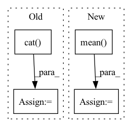

Pattern ID :7629

Before Change
estimated_sources_amplitude[target].append(_estimated_sources_amplitude)
estimated_sources_amplitude = [
torch.cat(estimated_sources_amplitude[target], dim=0).unsqueeze(dim=0) for target in __sources__
]
estimated_sources_amplitude = torch.cat(estimated_sources_amplitude, dim=0) // (n_sources, batch_size, n_mics, n_bins, n_frames)
estimated_sources_amplitude = estimated_sources_amplitude.permute(0, 2, 3, 1, 4)
After Change
_estimated_sources_amplitude = model(_mixture_amplitude) // (n_flips, n_sources, n_mics, n_bins, n_frames)
if n_mics == 1:
_estimated_sources_amplitude = _estimated_sources_amplitude.mean(dim=2, keepdim=True) // (1, n_sources, n_mics, n_bins, n_frames)
elif n_mics == 2:
_estimated_sources_amplitude, _estimated_sources_amplitude_flipped = torch.unbind(_estimated_sources_amplitude, dim=0) // n_flips of (n_sources, n_mics, n_bins, n_frames)
_estimated_sources_amplitude_flipped = torch.flip(_estimated_sources_amplitude_flipped, dims=(1,)) // (n_sources, n_mics, n_bins, n_frames)
In pattern: SUPERPATTERN
Frequency: 3
Non-data size: 4
Instances
Fragment ID: 25302418
Project Name: tky823/dnn-based_source_separation
Commit Name: 217e98f862f93f0265909ff789fe6b945f207f35
Time: 2021-11-18
Author: delta9guitar97@gmail.com
File Name: egs/tutorials/mm-dense-lstm/src/adhoc_utils.py
M Class Name: AnonimousClass
N Class Name: AnonimousClass
M Method Name: separate_by_mm_dense_lstm(3)
N Method Name: separate_by_mm_dense_lstm(3)
M Parent Class:
N Parent Class:
M File Name: egs/tutorials/mm-dense-lstm/src/adhoc_utils.py
N File Name: egs/tutorials/mm-dense-lstm/src/adhoc_utils.py
M Start Line: 58
M End Line: 132
N Start Line: 19
N End Line: 125
'>
Before Change
// Concatenate labels (due to data augmentation)
if stage == sb.Stage.TRAIN and False:
classid = torch.cat([classid] * self.n_augment, dim=0)
elif stage == sb.Stage.VALID:
self.top_3_fidelity.append(
batch.id, theta_out, classification_out
)
After Change
loss_nmf = ((reconstructions - X_stft_logpower) ** 2).mean()
// loss_nmf = loss_nmf / reconstructions.shape[0] // avg on batches
loss_nmf = self.hparams.alpha * loss_nmf
loss_nmf += self.hparams.beta * (time_activations).abs().mean()
if stage != sb.Stage.TEST:
if hasattr(self.hparams.lr_annealing, "on_batch_end"):
self.hparams.lr_annealing.on_batch_end(self.optimizer)
'>
Fragment ID: 25302420
Project Name: speechbrain/speechbrain
Commit Name: 47b398ed56590c2b0cf2a201bce09fdb7b6b5aa4
Time: 2022-11-25
Author: me@francescopaissan.it
File Name: recipes/ESC50/classification/train_l2i.py
M Class Name: InterpreterESC50Brain
N Class Name: InterpreterESC50Brain
M Method Name: compute_objectives(4)
N Method Name: compute_objectives(4)
M Parent Class: sb.core.Brain
N Parent Class: sb.core.Brain
M File Name: recipes/ESC50/classification/train_l2i.py
N File Name: recipes/ESC50/classification/train_l2i.py
M Start Line: 295
M End Line: 304
N Start Line: 266
N End Line: 280
'>
Before Change
estimated_sources_amplitude[target].append(_estimated_sources_amplitude)
estimated_sources_amplitude = [
torch.cat(estimated_sources_amplitude[target], dim=0).unsqueeze(dim=0) for target in __sources__
]
estimated_sources_amplitude = torch.cat(estimated_sources_amplitude, dim=0) // (n_sources, batch_size, n_mics, n_bins, n_frames)
estimated_sources_amplitude = estimated_sources_amplitude.permute(0, 2, 3, 1, 4)
After Change
_estimated_sources_amplitude = model(_mixture_amplitude) // (n_flips, n_sources, n_mics, n_bins, n_frames)
if n_mics == 1:
_estimated_sources_amplitude = _estimated_sources_amplitude.mean(dim=2, keepdim=True) // (1, n_sources, n_mics, n_bins, n_frames)
elif n_mics == 2:
_estimated_sources_amplitude, _estimated_sources_amplitude_flipped = torch.unbind(_estimated_sources_amplitude, dim=0) // n_flips of (n_sources, n_mics, n_bins, n_frames)
_estimated_sources_amplitude_flipped = torch.flip(_estimated_sources_amplitude_flipped, dims=(1,)) // (n_sources, n_mics, n_bins, n_frames)
'>
Fragment ID: 25302421
Project Name: tky823/dnn-based_source_separation
Commit Name: 217e98f862f93f0265909ff789fe6b945f207f35
Time: 2021-11-18
Author: delta9guitar97@gmail.com
File Name: egs/tutorials/umx/src/adhoc_utils.py
M Class Name: AnonimousClass
N Class Name: AnonimousClass
M Method Name: separate_by_umx(3)
N Method Name: separate_by_umx(3)
M Parent Class:
N Parent Class:
M File Name: egs/tutorials/umx/src/adhoc_utils.py
N File Name: egs/tutorials/umx/src/adhoc_utils.py
M Start Line: 58
M End Line: 132
N Start Line: 19
N End Line: 125